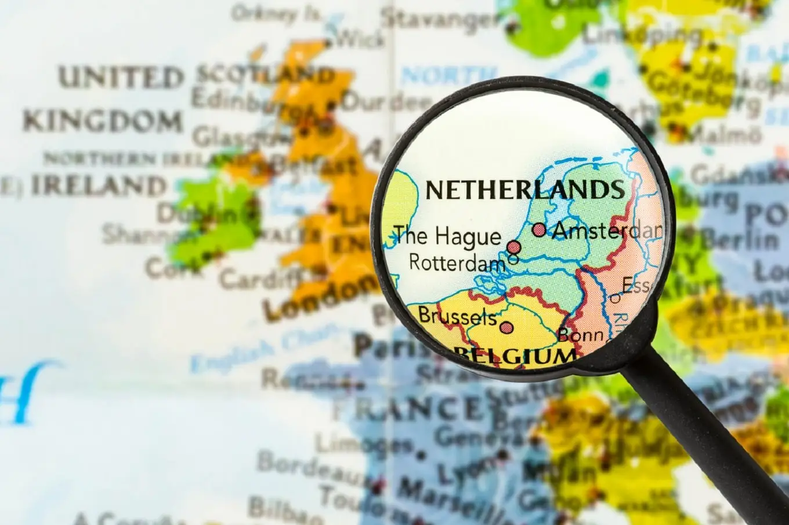

Os Países Baixos (Nederland em neerlandês) estão localizados no noroeste da Europa, entre as latitudes aproximadas de 51° e 53° N e longitudes 4° - 7° E e são limitados a norte e a oeste pelo Mar do Norte, a leste pela Alemanha e a sul pela Bélgica. Um aspecto notável do país é o fato de ser extremamente plano. Cerca de metade do território fica a menos de 1 metro acima do nível do mar, e boa parte das terras está de fato abaixo do nível do mar - daí o nome "Países Baixos". O ponto mais alto, Vaalserberg, na fronteira sudeste, localiza-se a uma altitude de 321 m. Muitas áreas baixas estão protegidas por diques. Partes dos Países Baixos, inclusive quase toda a moderna província da Flevolândia, foram conquistadas ao mar. Essas áreas são conhecidas como pôlderes. Especialistas em geografia afirmam que os diques protegem os pôlderes da metade ocidental do país e impedem que as águas do Mar do Norte invadam o continente.
